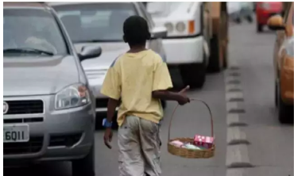

According to IBGE, in 2023, the Central-West region saw a reduction of 12 thousand children and adolescents in a
situation of child labor, going from 157 thousand to 145 thousand:
Child labor fell by 14.6% across the country between 2022 and 2023.
The Central-West region had the smallest proportional drop, compared to the North, which reduced 14
thousand
children and
adolescents.
The Central-West region maintained a stable level of child labor compared to 2016.

O levantamento ainda revela que, apesar de possuir o menor número, com média de 4,5%, o Centro-Oeste
registra média de trabalho infantil maior que a média nacional, que é 4,2%. Apenas a região Sudeste (3,3%) e
a Sul (3,8%) tiveram proporções menores.